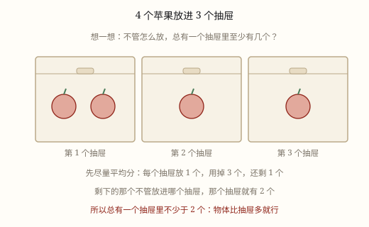
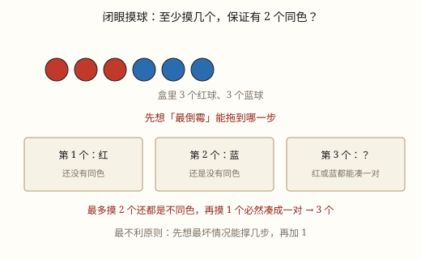

抽屉原理与最不利原则
东西比抽屉多，就一定有一个抽屉里至少放了两个。这不是算出来的，是「怎么躲都躲不过」逼出来的。
| 所属主题 | 抽屉原理 |
|---|---|
| 所属模块 | 数学思考 |
| 课标学段 | 第三学段（5~6年级） |
| 前置知识 | 有余数除法的意义与余数的性质 |
| 核心素养 | 推理意识模型意识应用意识 |
教材定位
人民教育出版社《2024年版》
对应六下数学广角「鸽巢问题」：抽屉原理的基本模型。；对应六下数学广角「鸽巢问题」：最不利原则。
说明
把 4 个苹果放进 3 个抽屉，随便怎么放，总有一个抽屉里至少放了 2 个。你可以亲手试试：想让每个抽屉都只放 1 个，3 个抽屉最多只能放 3 个，手里还剩 1 个，它必须挤进某个抽屉。
把苹果换成任何东西，把抽屉换成任何「格子」，结论都一样：东西的个数比抽屉多，就一定有抽屉里至少 2 个。这就是抽屉原理，也叫鸽巢问题——鸽子比巢多，总有一个巢里挤了两只。
东西多得多的时候，结论更强。8 个苹果放进 3 个抽屉：就算每个抽屉先分到 2 个，一共才分出 6 个，还剩 2 个要继续放，所以至少有一个抽屉里有 2+1=3 个。用有余数除法写就是 8÷3=2 余 2，商加 1 得 3。
一般地，n 个东西放进 m 个抽屉，n 除以 m 有余数时，至少有一个抽屉里有「商 +1」个；正好除尽时，至少有一个抽屉里有「商」个。
要留意「至少」这两个字：它保证存在一个这样的抽屉，但从不告诉你是哪一个，也不说有几个抽屉是满的。这有点像说「班里一定有人跑得最快」，说了等于没说，可是它确实一定对。
题目里常常不写「抽屉」两个字，要自己造。按颜色分组，颜色就是抽屉；按月份分组，月份就是抽屉；按尾数分组，10 个尾数就是抽屉。能把这些东西分完的那几个组，就是抽屉。造抽屉的本事，比记结论更要紧。
它还有两种常见问法。一种是已知东西的个数，问「至少有几个挤在一起」；另一种是反过来，问「至少要准备多少东西，才能保证有 2 个挤在一起」。前者用除法，后者用「抽屉数 +1」。
（最不利原则）
有一类问题总带着「保证」两个字：至少取几个才能保证有两个同色？至少摸几次才能保证摸到白球？「保证」的意思是——不管运气多差，都一定办到。
对付「保证」，办法是先想最倒霉的情况。以 3 个白球、4 个黑球为例，想摸到白球，偏偏每次都摸到黑球，这就是最倒霉。黑球一共只有 4 个，摸走 4 个黑球以后，袋子里剩下的全是白球。
所以第 5 次一定摸到白球，4+1=5。这个「加 1」不是习惯，是因为倒霉情况已经用完了，再多做一次，就没有「不成功」的可能。
它和抽屉原理是一对搭档：抽屉原理说「一定有」，最不利原则说「做几次才一定有」。前者管结论，后者管次数。也正因为如此，抽屉原理算的是「商加 1」，最不利原则算的是「倒霉情况的个数加 1」，两个 1 都不是凭空来的。
还有一句要紧的话：最不利不是最可能。最可能是第一次就摸到白球，但「可能」不算数，题目要的是「一定」。所以宁可把最坏的打算做足。
这类题常见三种问法，对应三种「倒霉」。第一种，只要拿到某一种（比如摸到红球），倒霉就是把别的颜色全摸光；第二种，只要有两个同类（比如两张同花色），倒霉就是每种先各来一个；第三种，要凑够 k 个同类，倒霉就是每种先各来 k-1 个。分清是哪一种，答案就出来了。
使用场景
生日：一年只有 12 个月，班里 13 个同学，至少 2 人同一个月出生。
颜色：抽屉里只有 4 种颜色的袜子，取 5 只，至少有 2 只同色。
快递柜：6 个格口塞 7 个包裹，至少有一个格口放了 2 个。
书包分格：3 个格子放 4 本书，至少一格里有 2 本。
扑克牌：只有 4 种花色，抽 5 张（不算大小王），至少 2 张同花色。
（最不利原则）
摸球：袋里 5 个红球 3 个蓝球，至少摸几个才能保证摸到红球。
抽扑克牌：想凑同花色，最倒霉就是四种花色各抽一张。
生日同一天：想保证有两人同一天生日，最倒霉是每天都只有一个人过生日。
密码锁：忘了最后一位，最倒霉要试到最后一种才打开。
抽奖：想保证中奖，先算清楚有多少张是不中的，把它们全抽光。
注意点
先分清谁是苹果、谁是抽屉。分反了，结论就说不通。问「至少几人同月」，人就是苹果，月份才是抽屉。
「至少 2 个」的条件是东西比抽屉多，两者一样多时正好一格一个，凑不出 2 个。
抽屉原理只说「有一个」，不说「哪一个」，也不说「至少有几个抽屉里有两个」。
求「至少几个」用有余数除法：商加 1；正好除尽时，答案就是商，不必加。
抽屉可以自己造。有时候题目里没写「抽屉」，要按颜色、按月份、按尾数把东西分好组，那些组就是抽屉。
（最不利原则）
先看题目有没有「保证」。没有它，问的只是「可能」，不用想最不利。
最不利不等于最可能。最可能是第一次就成功，但题目要的是「一定成功」。
倒霉情况的个数要数全：颜色几种、花色几种、月份几个，一个都不能漏。
算完倒霉情况，别忘了再加 1。加的这个 1，是「再做一次」的那一次。
看清问的是次数还是种类。同样是「至少」，问「取几次」和问「有几种颜色」答案完全不是一回事。
答案要能自己说通。算完问一句：比这个数少一次，能不能故意躲开？能躲开，说明这个数就是最小的；躲不开，说明还算少了。

图 1：物体比抽屉多，总有抽屉要装两个

图 1：先想「最倒霉」，再加 1 就保证了
为什么是这样
算理推导
先假设一个最乐观的情况：每个抽屉里最多只放 1 个。
3 个抽屉，每个最多 1 个，一共最多放 3 个苹果。
可手里有 4 个。第 4 个无论放进哪个抽屉，那个抽屉就从 1 个变成 2 个。
也就是说，「每个抽屉都最多 1 个」这个假设撑不住，一定存在一个抽屉至少 2 个。注意我们并没有指出是哪个抽屉，只说明「全都只有 1 个」是不可能的。
再看 8 个苹果 3 个抽屉：假设每个抽屉最多 2 个，一共最多 6 个，还剩 2 个没处放；所以至少有一个抽屉不少于 3 个。8÷3=2 余 2，商 2 加 1 正好是 3。
把这个思路说成一句话：先假装能躲开，再数一数躲开需要多少位置，位置不够，就躲不开。
为什么「商加 1」是对的？因为「商」正是「如果每个抽屉都尽量少放，每个抽屉要放几个」。每个抽屉都只放这么少，就已经用掉了「抽屉数 × 商」个东西；只要还剩哪怕 1 个，它都得让某个抽屉多加 1 个。
（最不利原则）
先问清楚什么叫成功：摸到一个白球。
再问什么叫「最倒霉但还没成功」：每一次摸到的都不是白球，全是黑球。
这种倒霉能持续多久？袋里的黑球只有 4 个，摸走 4 个黑球以后，就再也没有「不成功」的球可摸了。
第 5 次伸手，袋里只剩白球，一定成功。4+1=5。
换成一般的话：要保证拿到某一类东西，就把「不是它」的全部取光，再多取 1 个。要保证拿到 2 个同类，就让每类先各取 1 个，再多取 1 个。
如果要求 3 个同类（比如 3 种颜色的球，保证 3 个同色），倒霉情况就是每种颜色各取 2 个，一共 6 个，再多取 1 个才凑出 3 个，3×2+1=7。
动手实验
准备 4 颗糖和 3 个小盒子，请同桌背过身随意放，你记录每次三个盒子里各有几颗，连做 10 次。看看有没有哪一次做到「每个盒子都不超过 1 颗」——一次也不会有。再把糖加到 7 颗，重做 10 次，看是不是每次都有盒子至少 3 颗。 （最不利原则） 用 3 颗白棋、4 颗黑棋放进不透明袋子。同桌两人一个摸一个记，摸 20 轮，每轮记录「第几次才第一次摸到白棋」。把 20 个记录排成一排，看最大的那个数是几。你会发现最多是 5，而且每一轮最后都摸到了白棋——这正是「保证」的意思。再把白棋减到 1 颗重做一次，看最大是几。
按场景的例题
例 1（场景：校园生活） 班里的生日月份
班里 40 人，一年 12 个月。至少有多少人在同一个月过生日？
解：40÷12=3 余 4。就算每个月先分 3 人，还剩 4 人要分到某几个月里，那些月份会变成 4 人，3+1=4。
答：至少有 4 人在同一个月过生日。
例 2（场景：校园生活） 全校同一天生日
某小学有 367 名学生，一年按 365 天算。至少有几名学生在同一天过生日？
解：365 天是 365 个抽屉。就算每天先排 1 人，也只排下 365 人，还剩 2 人；367÷365=1 余 2，1+1=2。
答：至少有 2 人同一天过生日。
例 3（场景：物流运输） 快递柜放包裹
快递柜有 6 个格口，要放 20 个包裹（每格可以叠放）。至少有一个格口放了多少个？
解：20÷6=3 余 2，3+1=4。
答：至少有一个格口放了 4 个。
例 4（场景：家庭与年龄） 一箱彩色积木
一箱积木只有 5 种颜色，至少要拿几块，才能保证有 2 块同色？
解：最不凑巧时前 5 块颜色各不相同，第 6 块一定和前面某块同色，5+1=6。
答：至少 6 块。
例 5（场景：上学日常） 笔袋里的彩笔
笔袋里的彩笔只有红、蓝、黑、绿 4 种颜色，共有 26 支。至少有多少支笔同色？
解：26÷4=6 余 2。就算 4 种颜色各放 6 支，也只用了 24 支，还剩 2 支，6+1=7。
答：至少有 7 支笔同色。
例 6（场景：购物消费） 商场抽奖箱
抽奖箱里有 5 个红球、3 个蓝球，每次摸一个不放回。至少要摸几次，才能保证摸到红球？
解：最倒霉是先把 3 个蓝球全摸出来，这时袋里只剩红球，再摸 1 个必是红球，3+1=4。
答：至少 4 次。
例 7（场景：校园生活） 同一天生日
一年按 365 天算，至少要多少人，才能保证有 2 人同一天过生日？
解：最倒霉是每天只有 1 人过生日，365 天刚好排下 365 人；第 366 人无论哪天生日，都会和前面某人撞上，365+1=366。
答：至少 366 人。
例 8（场景：校园生活） 班里的扑克牌游戏
一副扑克牌去掉大小王共 52 张，有 4 种花色。至少抽几张，才能保证有 2 张同花色？
解：最倒霉是 4 种花色各抽 1 张，共 4 张还没重复；第 5 张一定和其中一张同花色，4+1=5。如果连大小王也算进去，倒霉时还要多抽 2 张王，答案就变成 7 张。
答：至少 5 张。
例 9（场景：饮食与配比） 三种口味的糖
袋里有草莓、柠檬、薄荷三种口味的糖各 5 颗。至少拿几颗，才能保证有 2 颗同口味？
解：最倒霉是三种口味各拿 1 颗，共 3 颗还不重复；第 4 颗一定重复，3+1=4。
答：至少 4 颗。
例 10（场景：家庭与年龄） 自行车密码锁
自行车密码锁是 4 位数字，前 3 位记得，最后一位忘了。最多试几次才能保证打开？
解：最后一位可以是 0 到 9，最倒霉要试到最后一种才对，一共 10 次。
答：最多试 10 次。
常用推论
n 个东西放进 m 个抽屉，n 除以 m 有余数时，至少有一个抽屉里有「商 +1」个。
n 正好被 m 整除时，至少有一个抽屉里有 n÷ m 个。
要保证有 2 个在同一抽屉，东西至少要比抽屉多 1 个。
反过来用：如果要求每个抽屉都不超过 k 个，那么最多只能放「抽屉数 × k」个东西。
题目里没有现成的「抽屉」时，按颜色、月份、尾数、属相分组，组的个数就是抽屉数。
要保证有 2 个同类，先每类取 1 个，再多取 1 个：m+1，其中 m 是类别数。
要保证有 k 个同类，先每类取 k-1 个，再多取 1 个：m×(k-1)+1。
要保证取到某一类（这一类共有 a 个），把其他类全部取光再加 1。
「至少」的答案 = 倒霉情况的全部个数 +1。
题目问「最多试几次」，换的说法就是「保证成功要几次」，照样按最倒霉来算。
易错点
错班里 13 人、12 个月，答「至少有 13 个月里有 2 人出生」。
为什么错苹果和抽屉认反了。13 是苹果，12 个月才是抽屉，结论应该落在人身上，不是落在月份上。
正确至少有 2 人在同一个月出生。
错40 人、12 个月，40÷12=3 余 4，答「至少 3 人同月」。
为什么错只取了商。余下的 4 人还要分进某几个月，那些月份会变成 4 人。
正确3+1=4，至少有 4 人同月。
错说「5 个苹果放进 5 个抽屉，也一定有一个抽屉至少 2 个」。
为什么错东西和抽屉一样多时，正好可以一格一个，凑不出 2 个。
正确东西必须比抽屉多，结论才成立；5 个放 5 个可以每格 1 个。
错答「第 3 个抽屉里一定有 2 个」。
为什么错抽屉原理只保证「存在一个」，没说是哪一个，指定抽屉就说不准了。
正确只能说「至少有一个抽屉里有 2 个」，不能点名。
错3 个白球、4 个黑球，答「至少 4 次能保证摸到白球」。
为什么错4 次只是把 4 个黑球摸完，第 4 次摸到的还是黑球，到这一刻还没保证。
正确4+1=5 次。
错答「一般第一次就摸到白球，所以 1 次就行」。
为什么错这是最可能的情况，不是最倒霉的情况。「保证」要求运气最差也成立。
正确按最不利算：4+1=5 次。
错52 张牌保证有 2 张同花色，答「至少 4 张」。
为什么错4 张只是四种花色各 1 张，一张都没重复，还没成功。
正确4+1=5 张。
错3 种口味的糖，保证有 3 颗同口味，答「3+1=4 颗」。
为什么错要 3 颗同类，倒霉情况是每种口味各拿 2 颗，一共 6 颗，不是各拿 1 颗。
正确3×2+1=7 颗。
直观理解
抽屉原理不是算出来的，是「躲不过去」：你想让每个抽屉都清清爽爽只放一个，可抽屉就那么多，手上东西一多，总有一个抽屉被塞进第二个。它只管「一定会有」，不管「会在哪儿」。 （最不利原则） 最不利原则就是先把自己当成全世界运气最差的人：想摸白的，偏偏一直摸到黑的；那就干脆把黑的全摸完——摸到没得摸，下一个想不成功都难。它教的不是悲观，是「把最坏的情况算进去，心里才有底」。
苹果多，抽屉少，怎么分也分不了；一格一个分完了，剩下那个没处跑。 （最不利原则） 要保证，先倒霉；倒霉到头再加一。黑的摸完再伸手，白的想躲也躲不及。